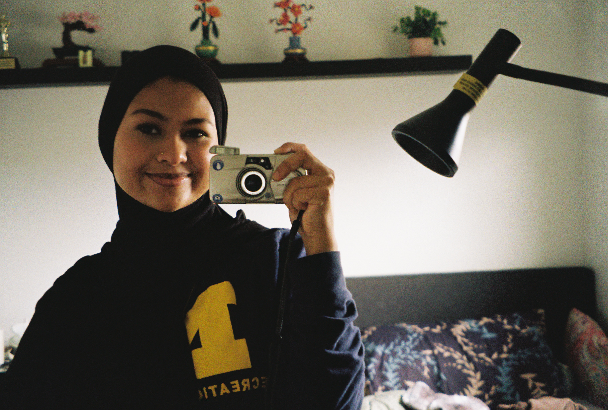

Becoming
About me
My name is Tabassum, and I am a senior at the University of Michigan studying UX Design with a minor in Writing.
I'm a photographer, writer, and someone who pays a lot of attention to the moments in between. Things that people don't always notice at first, but remember later. My work is often rooted in personal experience, shaped by memory, identity, and the environments I move through.
This project brings together the two things I care most about: visual storytelling and reflection. It is both a documentation of my final semester and a way of making sense of it in real time.
About this project
For my capstone, I'm working on a photo narrative about my last semester of college. The main idea is looking at independence not as one big moment, but as something that builds slowly over time through everyday experiences. I originally was thinking about this more generally, but now I've shifted to structuring it as a timeline — from January through graduation — so you can actually see that progression as it happens.
I've also decided to only shoot on film, which is a big part of the project. I'm using one roll of 35mm film per month, so each roll kind of represents a specific period of time. Film forces me to slow down and be more intentional about what I capture, and I like that it mirrors the idea of gradual change and not really knowing how things will turn out right away.
Along with the photos, I'll include short pieces of writing similar to journal entries or fragments to add context without over-explaining these periods. Overall, I'm trying to capture what it feels like to be in this in-between stage where things aren't fully figured out yet, and how independence kind of forms in small, everyday ways.
- Institution
- University of Michigan · Class of 2026
- Medium
- 35mm film · January — May 2026
- Course
- MiW Capstone Project